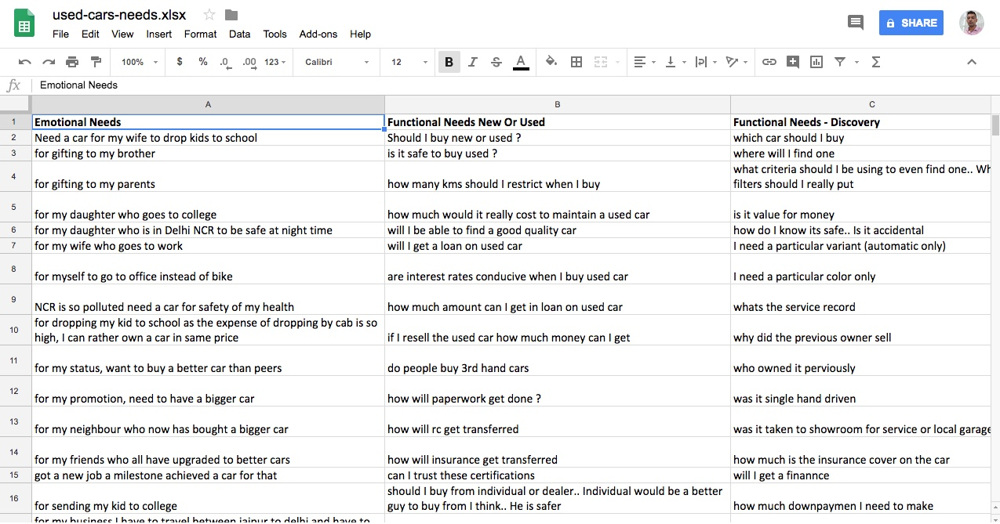
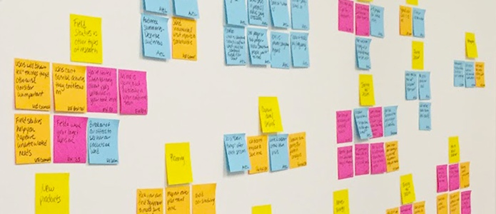
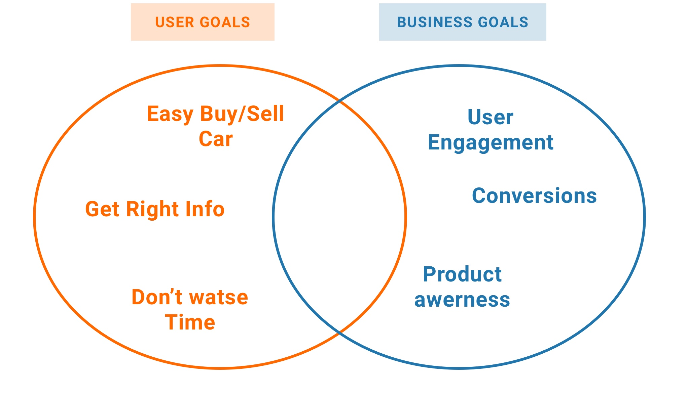
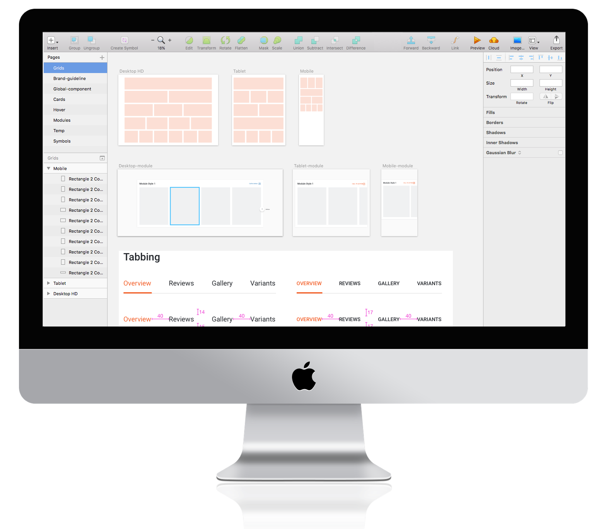
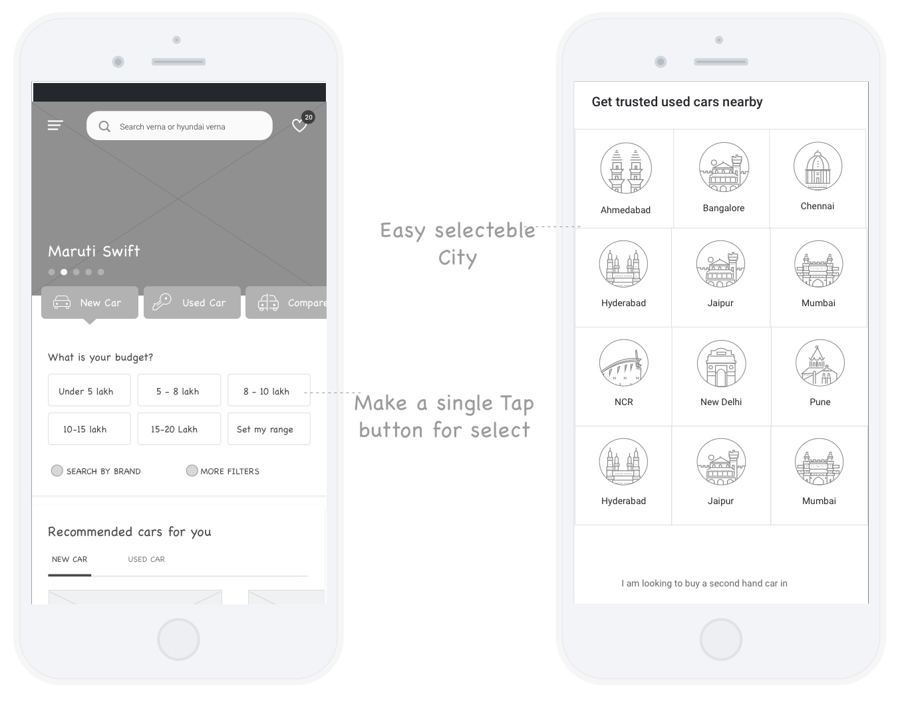
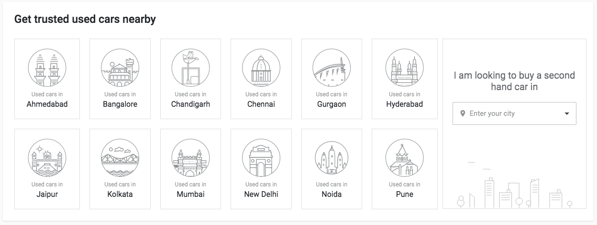

Cardekho
September 2017 - Now
Partially Shipped, Work-In-Progress
Interaction Design
UI Guideline
Information Architecture
HTML,CSS
BACKGROUND
CarDekho.com is India's leading car search venture that helps users buy cars and bikes that are right for them. Its website and app carry rich automotive content such as expert reviews, detailed specs and prices, comparisons as well as videos and pictures of all car brands and models available in India. The company has tie-ups with many auto manufacturers, more than 4000 car dealers and numerous financial institutions to facilitate the purchase of vehicles.
This project is a collaboration of PWA, React and Sass with the aim to use/reuse Common Component for all platform and improvements Reliablilty, fast speed, Increased engagement and conversions , and my role is to reimagine the UX and UI for web and mobile.
This project is still work-in-progress.
Product Preview
WAP overview
GETTING STARTED
With better engagement and convert in PWA comes greater design challenge
In current and previous we are using diffrent web for mobile and desktop. So every time need a double effort for same thing.
Understand the need of users

Understand the needs
- Why we used diffrent web for mobile and desktop (e.g. used a diffrent mobile site for mobile user )
- Consistency issue with diffrent platform and system
- To create a same experience on all platform

User research helped determine my product vision.
Developers have ready to work on pwa, react. But now, here we come with following design:
- How we make a same UX/UI for across the system?
- How to Keep in the lighter component for fast render and usable?
- How can we improvement the user engagment and conversions
- How many components are common and reusable?
DEFINING GOALS
Find a common ground in user goals and business goals
The vision I have for Replay is to help people build professional skills through reading previously published but high-quality blog posts. Users and the product have different goals, but I believe it's possible to find a common ground.

DESIGN DECISIONS
We can only expect behavioral change after emotional and cognitive change. After all, the goal is to help users to find easlity and fast result.
Create guideline for all platforms, systems and components
We created an components using uesr testing, research.
We created an components using uesr testing, research.

Create guidline, Design Components for web and mobile
Be mindful of human factors
This is a detail that I paid attention to during user testing. The original filter design allows more space to show Big label and city with image. we are using image for 12 popular citis by covering 70% users and as a human factor."

Easy and 1 click navigation to choose the filters

Creating an awesome reading usable and fast experience visual design
Its is a great experience to work with a high valuable goal from business side and new technology. I used different font weights, colors, and sizes to create a clear information hierarchy.
I'm continuing to work on this project in the organization. There are a lot more things to be explored, such as designing effective UI, making the prototype more high-fidelity, and evaluating the effective of the current iteration with more users, etc.

Easy and 1 click navigation to choose the filters
REFLECTIONS
This is main product of girnarsoftr that I've always felt passionate about and I gave myself about 4 year to work on. Through the design process, I was research current data, flow, conversions funnel and quickly moving between paper and digital prototyping, testing prototypes with users, and co-creating with and getting feedback from my project manager and engineers. From each iteration, I learned something valuable. Some helped me make small usability improvements, some helped me make major changes in my design direction.:
- The sky is the limit, but with technical and time constraints, I learned to prioritize features that provide most value to users;
- Always test your project and data performance,Learn and think again
- Consider human factors to enhance the UX: the “fat finger” problem, Fitts’ Law
- Visual design is a crucial part of the overall experience, especially when the function of the web/app is heavily dependent on the information hierarchy and legibility of the content.